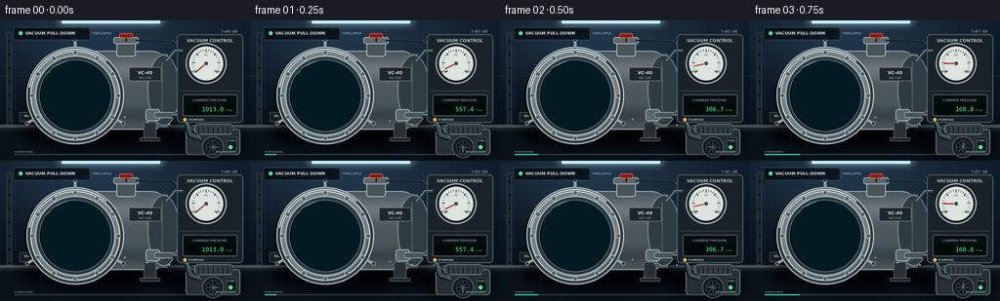
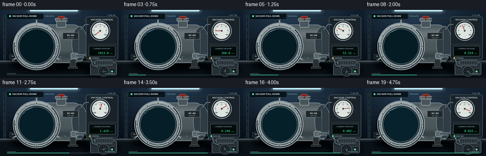

CODING AGENTS AS PIXEL WORLD MODELS
traex/GPT-5.6-Sol · mechanics_0028
点击播放 · 原生 RGB 像素
逐轮保存的候选
回放视频、检查图与代码变化。
每份候选均可单独播放。实际图片检查记录在下方工具轨迹中。
候选 01播放与检查图
点击播放 · 原生 RGB 像素

展开代码变化
--- 上一保存版本
+++ 本次保存版本
@@ -0,0 +1,304 @@
+from pathlib import Path
+import math, json
+import numpy as np
+from PIL import Image, ImageDraw, ImageFont, ImageFilter
+import artifact_io
+
+CASE_DIR = Path(__file__).resolve().parent
+spec = json.loads((CASE_DIR/'task_spec.json').read_text())
+W,H,N,FPS = spec['width'],spec['height'],spec['frames'],spec['fps']
+S=4
+w,h=W*S,H*S
+rng=np.random.default_rng(28)
+
+FONT='/usr/share/fonts/truetype/dejavu/DejaVuSans.ttf'
+FONT_B='/usr/share/fonts/truetype/dejavu/DejaVuSans-Bold.ttf'
+FONT_M='/usr/share/fonts/truetype/dejavu/DejaVuSansMono.ttf'
+def font(px,bold=False,mono=False):
+ path=FONT_M if mono else (FONT_B if bold else FONT)
+ return ImageFont.truetype(path,max(1,int(px*S)))
+def box(a): return tuple(int(round(v*S)) for v in a)
+def pt(a): return tuple(int(round(v*S)) for v in a)
+def sw(v): return max(1,int(round(v*S)))
+
+def txt(draw,pos,text,size,fill,anchor=None,bold=False,mono=False,stroke=0,stroke_fill=None):
+ draw.text(pt(pos),text,font=font(size,bold,mono),fill=fill,anchor=anchor,
+ stroke_width=sw(stroke) if stroke else 0,stroke_fill=stroke_fill)
+
+def rounded(draw,coords,r,fill,outline=None,width=1):
+ draw.rounded_rectangle(box(coords),radius=sw(r),fill=fill,outline=outline,width=sw(width))
+
+def ellipse(draw,coords,fill,outline=None,width=1):
+ draw.ellipse(box(coords),fill=fill,outline=outline,width=sw(width))
+
+def line(draw,coords,fill,width=1,joint='curve'):
+ draw.line(box(coords),fill=fill,width=sw(width),joint=joint)
+
+# Static background, lightly textured but stable across the sequence.
+yy,xx=np.mgrid[0:h,0:w]
+Y=yy/S; X=xx/S
+base=np.zeros((h,w,3),dtype=np.float32)
+base[:,:,0]=11+8*(1-Y/H)
+base[:,:,1]=18+13*(1-Y/H)
+base[:,:,2]=25+18*(1-Y/H)
+# overhead pool of cool industrial light
+pool=np.exp(-(((X-105)/100)**2+((Y-18)/55)**2))
+base += pool[:,:,None]*np.array([20,29,36])[None,None,:]
+noise=rng.normal(0,1.25,(h,w,1))
+base+=noise
+base=np.uint8(np.clip(base,0,255))
+BG=Image.fromarray(base,'RGB')
+bgd=ImageDraw.Draw(BG)
+# rear wall seams and framing
+for x in (15,80,145,210):
+ line(bgd,(x,0,x,92),(31,45,55),.45)
+line(bgd,(0,57,256,57),(33,48,58),.6)
+# top fluorescent fixture glow
+light=Image.new('RGBA',(w,h),(0,0,0,0)); ld=ImageDraw.Draw(light)
+rounded(ld,(57,-6,170,7),3,(172,219,232,160))
+light=light.filter(ImageFilter.GaussianBlur(sw(5)))
+BG=Image.alpha_composite(BG.convert('RGBA'),light)
+bgd=ImageDraw.Draw(BG)
+rounded(bgd,(63,0,164,3),1,(191,231,239,155))
+# left vertical laboratory strut
+rounded(bgd,(7,12,12,112),1,(29,42,49,255),outline=(67,82,88,255),width=.5)
+for y in range(20,108,14): ellipse(bgd,(8.5,y,10.5,y+2),(9,14,18,255))
+# bench and front edge
+bgd.rectangle(box((0,107,256,144)),fill=(16,23,29,255))
+bgd.rectangle(box((0,107,256,110)),fill=(72,82,85,255))
+bgd.rectangle(box((0,110,256,113)),fill=(29,37,42,255))
+# soft shadows on bench
+shadow=Image.new('RGBA',(w,h),(0,0,0,0)); sd=ImageDraw.Draw(shadow)
+ellipse(sd,(19,99,188,132),(0,0,0,165)); ellipse(sd,(172,112,252,141),(0,0,0,145))
+shadow=shadow.filter(ImageFilter.GaussianBlur(sw(6)))
+BG=Image.alpha_composite(BG,shadow)
+
+# fixed chamber body (behind front door)
+static=Image.new('RGBA',(w,h),(0,0,0,0)); d=ImageDraw.Draw(static)
+# horizontal steel pressure vessel body and rear cap, with layered brushed metal bands
+rounded(d,(73,31,173,112),18,(76,88,94,255),outline=(160,176,180,255),width=1)
+# metallic horizontal gradient strips
+for y in range(34,110):
+ shine=78 + 30*math.exp(-((y-50)/11)**2) - 20*math.exp(-((y-97)/8)**2)
+ d.rectangle(box((88,y,172,y+1)),fill=(int(shine),int(shine+11),int(shine+14),255))
+# right rear curvature and seam
+ellipse(d,(151,35,184,108),(51,63,69,255),outline=(132,146,150,255),width=1)
+line(d,(166,42,166,102),(190,201,200,100),.8)
+# top manifold neck
+rounded(d,(119,20,139,37),3,(74,86,90,255),outline=(173,185,184,255),width=1)
+rounded(d,(116,17,142,24),2,(92,105,108,255),outline=(185,195,193,255),width=.8)
+# manifold cap red handle
+rounded(d,(122,13,136,18),2,(125,37,31,255),outline=(235,105,83,255),width=.7)
+line(d,(129,18,129,22),(45,49,49,255),2)
+# vessel feet
+for x in (80,147):
+ rounded(d,(x,104,x+13,122),2,(45,52,55,255),outline=(103,112,113,255),width=.7)
+ rounded(d,(x-4,120,x+17,124),1,(35,41,43,255),outline=(93,102,102,255),width=.7)
+# chamber label plate
+rounded(d,(132,48,165,62),1,(35,43,46,255),outline=(137,151,152,255),width=.6)
+txt(d,(148.5,51),'VC-40',4.5,(215,224,221,255),anchor='ma',bold=True)
+txt(d,(148.5,57),'VACUUM',3.1,(134,168,172,255),anchor='ma')
+# pressure sensor wire
+line(d,(139,20,177,21,187,31),(32,37,41,255),2)
+line(d,(139,19.3,177,20.3,187,30.3),(101,116,120,255),.55)
+# lower outlet valve and pipe
+rounded(d,(149,91,164,103),3,(91,105,108,255),outline=(186,195,191,255),width=.8)
+rounded(d,(158,94,181,100),2,(74,88,92,255),outline=(155,169,170,255),width=.8)
+# pipe elbow into hose
+line(d,(177,97,188,99,192,108),(31,38,41,255),6)
+line(d,(177,96,188,98,192,107),(111,128,132,255),2)
+# small warning plaque
+rounded(d,(20,94,58,104),1,(27,34,37,255),outline=(107,118,117,255),width=.5)
+txt(d,(39,97.7),'SEALED VESSEL',3.4,(191,198,193,255),anchor='mm',bold=True)
+
+# Pump unit on lower right
+rounded(d,(190,111,246,138),4,(42,51,56,255),outline=(112,128,133,255),width=1)
+# pump top and motor ribs
+rounded(d,(199,106,239,117),4,(54,65,70,255),outline=(135,149,151,255),width=.8)
+for x in range(203,239,5): line(d,(x,109,x,116),(24,31,35,255),1)
+# braided hose from chamber outlet to pump inlet
+line(d,(192,107,195,117,204,120),(15,20,23,255),7)
+line(d,(192,107,195,117,204,120),(67,83,88,255),4)
+for q in np.linspace(0,1,8):
+ x=192*(1-q)+204*q + 2*math.sin(q*math.pi)
+ y=107*(1-q)+120*q
+ line(d,(x-1,y-1,x+2,y+2),(127,145,147,180),.45)
+# pump face and controls
+ellipse(d,(207,119,229,141),(25,32,36,255),outline=(104,120,125,255),width=.8)
+ellipse(d,(211,123,225,137),(16,23,27,255),outline=(77,92,97,255),width=.6)
+for a in range(0,360,45):
+ ar=math.radians(a); line(d,(218,130,218+6*math.cos(ar),130+6*math.sin(ar)),(65,79,83,255),1)
+rounded(d,(232,120,242,134),1,(24,30,34,255),outline=(87,101,104,255),width=.6)
+txt(d,(237,122),'PUMP',2.4,(135,151,153,255),anchor='ma',bold=True)
+# gauge and readout mounting panel
+rounded(d,(181,14,249,105),4,(30,39,44,245),outline=(86,104,111,255),width=1)
+line(d,(184,72,246,72),(78,91,95,255),.5)
+txt(d,(215,18),'VACUUM CONTROL',4.5,(177,195,198,255),anchor='ma',bold=True)
+# analog dial shell
+ellipse(d,(190,23,232,65),(19,25,29,255),outline=(152,168,171,255),width=1.5)
+ellipse(d,(193,26,229,62),(217,223,216,255),outline=(65,74,75,255),width=.7)
+# gauge scale ticks, from atmospheric bottom-left around top to vacuum bottom-right
+cx,cy,r=211,44,15
+for j in range(25):
+ a=math.radians(140 + j*(260/24))
+ rr=11.5 if j%4==0 else 12.7
+ x1,y1=cx+rr*math.cos(a),cy+rr*math.sin(a)
+ x2,y2=cx+14.5*math.cos(a),cy+14.5*math.sin(a)
+ line(d,(x1,y1,x2,y2),(30,38,38,255),.8 if j%4==0 else .4)
+txt(d,(198.5,52.5),'ATM',2.7,(31,40,40,255),anchor='mm',bold=True)
+txt(d,(223.1,52.5),'VAC',2.7,(31,40,40,255),anchor='mm',bold=True)
+txt(d,(211,35.5),'kPa',2.4,(65,73,72,255),anchor='mm')
+# readout housing
+rounded(d,(187,76,243,98),2,(12,18,20,255),outline=(94,112,115,255),width=.7)
+txt(d,(215,80),'CHAMBER PRESSURE',3.2,(117,143,146,255),anchor='ma',bold=True)
+# a flange pipe from gauge panel to chamber top
+line(d,(187,31,179,31,170,42),(55,66,71,255),3)
+line(d,(187,30.5,179,30.5,170,41.5),(139,155,158,255),.7)
+# front door shadow behind ring
+ellipse(d,(25,30,119,124),(1,7,11,230))
+
+# soft static metal highlights
+static=static.filter(ImageFilter.GaussianBlur(0.15*S))
+BASE=Image.alpha_composite(BG,static)
+
+# fixed vapor particles and wisps parameters
+particles=[]
+for k in range(95):
+ # Uniform points in circular viewport interior
+ while True:
+ px=rng.uniform(47,108); py=rng.uniform(48,105)
+ if ((px-77)/31)**2+((py-76)/32)**2<1: break
+ particles.append((px,py,rng.uniform(.18,.75),rng.uniform(0,6.28),rng.uniform(.3,1)))
+wisps=[]
+for k in range(13):
+ wisps.append((rng.uniform(50,95),rng.uniform(52,97),rng.uniform(12,26),rng.uniform(2,6),rng.uniform(-.5,.5)))
+
+frames=[]
+for i in range(N):
+ t=i/(N-1)
+ # eased extraction: dramatic early pressure drop, then high-vacuum tail
+ pressure=1013.0*math.exp(-11.35*t)+0.010
+ im=BASE.copy()
+ # viewport interior behind glass, overlaid before front flange
+ vd=ImageDraw.Draw(im)
+ # layered empty cavity: radial bands and rear-wall reflection
+ ellipse(vd,(32,30,122,122),(4,12,17,255),outline=(20,32,37,255),width=1)
+ for rad,col in [(39,(6,18,24,255)),(34,(7,23,30,255)),(29,(5,17,24,255))]:
+ ellipse(vd,(77-rad,76-rad,77+rad,76+rad),col)
+ # inner back ellipse gives real depth but no contents
+ ellipse(vd,(51,48,108,105),(3,13,19,255),outline=(26,47,55,255),width=.8)
+ # outlet aperture on rear/lower right, visible suction destination
+ ellipse(vd,(101,87,110,96),(2,5,7,255),outline=(91,113,117,200),width=.7)
+ # Vapor/haze signifies residual gas/moisture; fades and drifts toward extraction port
+ haze=Image.new('RGBA',(w,h),(0,0,0,0)); hd=ImageDraw.Draw(haze)
+ amt=(1-t)**1.65
+ # faint overall mist early
+ ellipse(hd,(42,40,114,112),(98,185,201,int(24*amt)))
+ # curved horizontal condensate wisps that shrink toward outlet
+ for k,(px,py,ln,th,phase) in enumerate(wisps):
+ drift=14*t + 2*math.sin(t*4+phase)
+ x=px+drift*(1-(py-76)**2/1800)
+ y=py+2*math.sin(t*5+phase)
+ alpha=int((32+22*(k%3==0))*amt)
+ if alpha<=1: continue
+ # wispy segmented curves
+ pts=[]
+ for z in np.linspace(-1,1,9):
+ xx=x+z*ln/2
+ yy2=y+math.sin(z*math.pi+phase+t*2)*th
+ pts.extend((xx,yy2))
+ line(hd,tuple(pts),(126,208,220,alpha),rng.uniform(.5,1.2))
+ # motes accelerate toward the outlet and fade
+ ox,oy=105.5,91.5
+ for k,(px,py,rr,ph,life) in enumerate(particles):
+ pull=t**1.4*(.28+.46*life)
+ x=px+(ox-px)*pull + math.sin(ph+t*10)*.5
+ y=py+(oy-py)*pull + math.cos(ph+t*8)*.35
+ a=int(105*amt*(.45+.55*life))
+ if a>2:
+ ellipse(hd,(x-rr,y-rr,x+rr,y+rr),(157,222,229,a))
+ # stay clipped optically by putting haze under rings; blur gives gas-like appearance
+ haze=haze.filter(ImageFilter.GaussianBlur(sw(1.05)))
+ im=Image.alpha_composite(im,haze)
+ d=ImageDraw.Draw(im)
+ # subtle moving gas glints at extraction aperture and hose; diminish over time
+ for k in range(4):
+ q=((t*3.2+k/4)%1)
+ a=int(130*amt)
+ x=105+q*91; y=92+15*q+5*math.sin(q*math.pi)
+ ellipse(d,(x-.7,y-.7,x+.7,y+.7),(115,207,218,a))
+ # front steel flange: multiple rings, polished highlights
+ ellipse(d,(27,27,127,127),(50,62,67,255),outline=(173,188,190,255),width=1.2)
+ ellipse(d,(31,31,123,123),(116,128,130,255),outline=(224,230,226,255),width=1)
+ ellipse(d,(36,36,118,118),(44,56,61,255),outline=(174,189,191,255),width=1.3)
+ ellipse(d,(40,40,114,114),(5,13,18,40),outline=(92,128,137,255),width=.8)
+ # metallic upper-left shine on flange
+ d.arc(box((29,29,125,125)),190,312,fill=(225,235,232,255),width=sw(1.2))
+ d.arc(box((33,33,121,121)),5,115,fill=(65,77,81,255),width=sw(1.3))
+ # glass reflections (clearer/brighter as fog clears)
+ glass=Image.new('RGBA',(w,h),(0,0,0,0)); gd=ImageDraw.Draw(glass)
+ gd.arc(box((43,42,112,112)),205,286,fill=(120,195,211,int(100+55*t)),width=sw(1.5))
+ line(gd,(52,48,68,42),(193,235,239,int(50+80*t)),1.1)
+ line(gd,(48,55,59,46),(194,235,239,int(28+45*t)),.55)
+ ellipse(gd,(42,41,113,113),(40,129,152,int(7+4*t)))
+ im=Image.alpha_composite(im,glass)
+ d=ImageDraw.Draw(im)
+ # flange bolts and red sealing witnesses
+ for k in range(12):
+ a=2*math.pi*k/12
+ bx,by=77+44*math.cos(a),77+44*math.sin(a)
+ ellipse(d,(bx-2.3,by-2.3,bx+2.3,by+2.3),(34,43,46,255),outline=(200,208,204,255),width=.7)
+ ellipse(d,(bx-.8,by-.8,bx+.8,by+.8),(121,137,139,255))
+ # three clamp latches, making seal unmistakable
+ for a in (math.radians(150),math.radians(270),math.radians(30)):
+ bx,by=77+49*math.cos(a),77+49*math.sin(a)
+ x2,y2=77+57*math.cos(a),77+57*math.sin(a)
+ line(d,(bx,by,x2,y2),(147,158,157,255),3)
+ ellipse(d,(x2-2,y2-2,x2+2,y2+2),(48,57,59,255),outline=(186,196,193,255),width=.6)
+ # analog needle (tracks logarithmic pressure so motion remains visible throughout)
+ fraction=min(1,max(0,(-math.log10(max(pressure/1013,1e-7)))/5.0))
+ ang=math.radians(140+260*fraction)
+ nx,ny=211+12.2*math.cos(ang),44+12.2*math.sin(ang)
+ line(d,(211,44,nx,ny),(178,40,34,255),1.2)
+ ellipse(d,(208.8,41.8,213.2,46.2),(69,75,73,255),outline=(191,196,189,255),width=.5)
+ # readout glow and pressure value
+ rounded(d,(190,86,240,96),1,(3,15,12,255))
+ if pressure>=100: val=f'{pressure:6.1f}'
+ elif pressure>=10: val=f'{pressure:6.2f}'
+ elif pressure>=1: val=f'{pressure:6.3f}'
+ else: val=f'{pressure:6.3f}'
+ txt(d,(229,90.9),val,6.4,(72,247,168,255),anchor='rm',mono=True)
+ txt(d,(231,92),'mbar',2.8,(67,154,120,255),anchor='lm')
+ # status LEDs: roughing then high-vac reached
+ led_col=(74,245,141,255) if t>.72 else (247,176,52,255)
+ ellipse(d,(187.5,100,191,103.5),led_col,outline=(203,225,211,255),width=.3)
+ txt(d,(193,101.7),'HIGH VAC' if t>.72 else 'PUMPING',3.2,(147,173,173,255),anchor='lm',bold=True)
+ # pump power LED and rotating fan center marker
+ ellipse(d,(234,128,238,132),(61,244,134,255),outline=(177,223,193,255),width=.4)
+ fanang=t*math.pi*10
+ line(d,(218,130,218+5*math.cos(fanang),130+5*math.sin(fanang)),(119,137,140,255),.7)
+ # cinematic overlays: explicit timelapse and elapsed lab-time
+ overlay=Image.new('RGBA',(w,h),(0,0,0,0)); od=ImageDraw.Draw(overlay)
+ rounded(od,(14,7,92,20),2,(5,10,13,174),outline=(91,119,126,140),width=.5)
+ ellipse(od,(19,11,23,15),(75,226,160,255))
+ txt(od,(26,13),'VACUUM PULL-DOWN',4.4,(219,232,231,255),anchor='lm',bold=True)
+ txt(od,(94,13),'TIMELAPSE',3.4,(110,158,168,255),anchor='lm',bold=True)
+ # accelerated elapsed time: 0 to 45 minutes
+ mins=round(45*t)
+ txt(od,(243,9),f'T+{mins:02d}:00',4.1,(181,201,203,230),anchor='ra',mono=True)
+ # progress rail at bottom
+ od.rectangle(box((15,137,241,138)),fill=(59,78,82,190))
+ od.rectangle(box((15,137,15+226*t,138)),fill=(70,220,164,235))
+ txt(od,(15,133.2),'ATMOSPHERE',2.7,(119,144,147,220),anchor='la',bold=True)
+ txt(od,(241,133.2),'HIGH VACUUM',2.7,(119,180,162,230),anchor='ra',bold=True)
+ im=Image.alpha_composite(im,overlay)
+ im=im.convert('RGB').resize((W,H),Image.Resampling.LANCZOS)
+ # very subtle cinematic contrast and cool color grade
+ arr=np.asarray(im).astype(np.float32)
+ arr=(arr-128)*1.045+128
+ arr[:,:,2]*=1.015
+ frames.append(np.uint8(np.clip(arr,0,255)))
+
+frames=np.stack(frames,axis=0)
+artifact_io.save(frames,CASE_DIR)
+print(f'Saved {frames.shape} RGB frames to {CASE_DIR}')
候选 02播放与检查图
点击播放 · 原生 RGB 像素

展开代码变化
--- 上一保存版本
+++ 本次保存版本
@@ -193,13 +193,16 @@
haze=Image.new('RGBA',(w,h),(0,0,0,0)); hd=ImageDraw.Draw(haze)
amt=(1-t)**1.65
# faint overall mist early
- ellipse(hd,(42,40,114,112),(98,185,201,int(24*amt)))
+ # Moisture fog is the visible proxy for otherwise transparent air. It is
+ # deliberately strongest in the atmospheric first frame and completely
+ # absent at high vacuum.
+ ellipse(hd,(42,40,114,112),(103,191,207,int(68*amt)))
# curved horizontal condensate wisps that shrink toward outlet
for k,(px,py,ln,th,phase) in enumerate(wisps):
drift=14*t + 2*math.sin(t*4+phase)
x=px+drift*(1-(py-76)**2/1800)
y=py+2*math.sin(t*5+phase)
- alpha=int((32+22*(k%3==0))*amt)
+ alpha=int((72+48*(k%3==0))*amt)
if alpha<=1: continue
# wispy segmented curves
pts=[]
@@ -207,16 +210,19 @@
xx=x+z*ln/2
yy2=y+math.sin(z*math.pi+phase+t*2)*th
pts.extend((xx,yy2))
- line(hd,tuple(pts),(126,208,220,alpha),rng.uniform(.5,1.2))
+ line(hd,tuple(pts),(145,219,230,alpha),rng.uniform(.7,1.45))
# motes accelerate toward the outlet and fade
ox,oy=105.5,91.5
for k,(px,py,rr,ph,life) in enumerate(particles):
pull=t**1.4*(.28+.46*life)
x=px+(ox-px)*pull + math.sin(ph+t*10)*.5
y=py+(oy-py)*pull + math.cos(ph+t*8)*.35
- a=int(105*amt*(.45+.55*life))
+ a=int(180*amt*(.45+.55*life))
if a>2:
ellipse(hd,(x-rr,y-rr,x+rr,y+rr),(157,222,229,a))
+ # Short trails make the extraction direction legible in motion.
+ trail=max(0.0, 4.0*(1-t)*(0.4+life))
+ line(hd,(x,y,x-trail,y-(oy-y)*.035),(133,211,224,a//2),.45)
# stay clipped optically by putting haze under rings; blur gives gas-like appearance
haze=haze.filter(ImageFilter.GaussianBlur(sw(1.05)))
im=Image.alpha_composite(im,haze)
可观测工具轨迹
实际执行的命令与返回图片。
命令 1exit 0
/bin/bash -lc "cat prompt.txt && printf '\\n---RULES---\\n' && cat GENERATION_RULES.md && printf '\\n---SPEC---\\n' && cat task_spec.json"
命令 2exit 0
/bin/bash -lc "find . -maxdepth 2 -type f -printf '%p\\n' | sort"
命令 3exit 0
/bin/bash -lc 'cat artifact_io.py'
命令 4exit 0
/bin/bash -lc "cat > generate.py <<'PY'
from pathlib import Path
import math, json
import numpy as np
from PIL import Image, ImageDraw, ImageFont, ImageFilter
import artifact_io
CASE_DIR = Path(__file__).resolve().parent
spec = json.loads((CASE_DIR/'task_spec.json').read_text())
W,H,N,FPS = spec['width'],spec['height'],spec['frames'],spec['fps']
S=4
w,h=W*S,H*S
rng=np.random.default_rng(28)
FONT='/usr/share/fonts/truetype/dejavu/DejaVuSans.ttf'
FONT_B='/usr/share/fonts/truetype/dejavu/DejaVuSans-Bold.ttf'
FONT_M='/usr/share/fonts/truetype/dejavu/DejaVuSansMono.ttf'
def font(px,bold=False,mono=False):
path=FONT_M if mono else (FONT_B if bold else FONT)
return ImageFont.truetype(path,max(1,int(px*S)))
def box(a): return tuple(int(round(v*S)) for v in a)
def pt(a): return tuple(int(round(v*S)) for v in a)
def sw(v): return max(1,int(round(v*S)))
def txt(draw,pos,text,size,fill,anchor=None,bold=False,mono=False,stroke=0,stroke_fill=None):
draw.text(pt(pos),text,font=font(size,bold,mono),fill=fill,anchor=anchor,
stroke_width=sw(stroke) if stroke else 0,stroke_fill=stroke_fill)
def rounded(draw,coords,r,fill,outline=None,width=1):
draw.rounded_rectangle(box(coords),radius=sw(r),fill=fill,outline=outline,width=sw(width))
def ellipse(draw,coords,fill,outline=None,width=1):
draw.ellipse(box(coords),fill=fill,outline=outline,width=sw(width))
def line(draw,coords,fill,width=1,joint='curve'):
draw.line(box(coords),fill=fill,width=sw(width),joint=joint)
# Static background, lightly textured but stable across the sequence.
yy,xx=np.mgrid[0:h,0:w]
Y=yy/S; X=xx/S
base=np.zeros((h,w,3),dtype=np.float32)
base[:,:,0]=11+8*(1-Y/H)
base[:,:,1]=18+13*(1-Y/H)
base[:,:,2]=25+18*(1-Y/H)
# overhead pool of cool industrial light
pool=np.exp(-(((X-105)/100)**2+((Y-18)/55)**2))
base += pool[:,:,None]*np.array([20,29,36])[None,None,:]
noise=rng.normal(0,1.25,(h,w,1))
base+=noise
base=np.uint8(np.clip(base,0,255))
BG=Image.fromarray(base,'RGB')
bgd=ImageDraw.Draw(BG)
# rear wall seams and framing
for x in (15,80,145,210):
line(bgd,(x,0,x,92),(31,45,55),.45)
line(bgd,(0,57,256,57),(33,48,58),.6)
# top fluorescent fixture glow
light=Image.new('RGBA',(w,h),(0,0,0,0)); ld=ImageDraw.Draw(light)
rounded(ld,(57,-6,170,7),3,(172,219,232,160))
light=light.filter(ImageFilter.GaussianBlur(sw(5)))
BG=Image.alpha_composite(BG.convert('RGBA'),light)
bgd=ImageDraw.Draw(BG)
rounded(bgd,(63,0,164,3),1,(191,231,239,155))
# left vertical laboratory strut
rounded(bgd,(7,12,12,112),1,(29,42,49,255),outline=(67,82,88,255),width=.5)
for y in range(20,108,14): ellipse(bgd,(8.5,y,10.5,y+2),(9,14,18,255))
# bench and front edge
bgd.rectangle(box((0,107,256,144)),fill=(16,23,29,255))
bgd.rectangle(box((0,107,256,110)),fill=(72,82,85,255))
bgd.rectangle(box((0,110,256,113)),fill=(29,37,42,255))
# soft shadows on bench
shadow=Image.new('RGBA',(w,h),(0,0,0,0)); sd=ImageDraw.Draw(shadow)
ellipse(sd,(19,99,188,132),(0,0,0,165)); ellipse(sd,(172,112,252,141),(0,0,0,145))
shadow=shadow.filter(ImageFilter.GaussianBlur(sw(6)))
BG=Image.alpha_composite(BG,shadow)
# fixed chamber body (behind front door)
static=Image.new('RGBA',(w,h),(0,0,0,0)); d=ImageDraw.Draw(static)
# horizontal steel pressure vessel body and rear cap, with layered brushed metal bands
rounded(d,(73,31,173,112),18,(76,88,94,255),outline=(160,176,180,255),width=1)
# metallic horizontal gradient strips
for y in range(34,110):
shine=78 + 30*math.exp(-((y-50)/11)**2) - 20*math.exp(-((y-97)/8)**2)
d.rectangle(box((88,y,172,y+1)),fill=(int(shine),int(shine+11),int(shine+14),255))
# right rear curvature and seam
ellipse(d,(151,35,184,108),(51,63,69,255),outline=(132,146,150,255),width=1)
line(d,(166,42,166,102),(190,201,200,100),.8)
# top manifold neck
rounded(d,(119,20,139,37),3,(74,86,90,255),outline=(173,185,184,255),width=1)
rounded(d,(116,17,142,24),2,(92,105,108,255),outline=(185,195,193,255),width=.8)
# manifold cap red handle
rounded(d,(122,13,136,18),2,(125,37,31,255),outline=(235,105,83,255),width=.7)
line(d,(129,18,129,22),(45,49,49,255),2)
# vessel feet
for x in (80,147):
rounded(d,(x,104,x+13,122),2,(45,52,55,255),outline=(103,112,113,255),width=.7)
rounded(d,(x-4,120,x+17,124),1,(35,41,43,255),outline=(93,102,102,255),width=.7)
# chamber label plate
rounded(d,(132,48,165,62),1,(35,43,46,255),outline=(137,151,152,255),width=.6)
txt(d,(148.5,51),'VC-40',4.5,(215,224,221,255),anchor='ma',bold=True)
txt(d,(148.5,57),'VACUUM',3.1,(134,168,172,255),anchor='ma')
# pressure sensor wire
line(d,(139,20,177,21,187,31),(32,37,41,255),2)
line(d,(139,19.3,177,20.3,187,30.3),(101,116,120,255),.55)
# lower outlet valve and pipe
rounded(d,(149,91,164,103),3,(91,105,108,255),outline=(186,195,191,255),width=.8)
rounded(d,(158,94,181,100),2,(74,88,92,255),outline=(155,169,170,255),width=.8)
# pipe elbow into hose
line(d,(177,97,188,99,192,108),(31,38,41,255),6)
line(d,(177,96,188,98,192,107),(111,128,132,255),2)
# small warning plaque
rounded(d,(20,94,58,104),1,(27,34,37,255),outline=(107,118,117,255),width=.5)
txt(d,(39,97.7),'SEALED VESSEL',3.4,(191,198,193,255),anchor='mm',bold=True)
# Pump unit on lower right
rounded(d,(190,111,246,138),4,(42,51,56,255),outline=(112,128,133,255),width=1)
# pump top and motor ribs
rounded(d,(199,106,239,117),4,(54,65,70,255),outline=(135,149,151,255),width=.8)
for x in range(203,239,5): line(d,(x,109,x,116),(24,31,35,255),1)
# braided hose from chamber outlet to pump inlet
line(d,(192,107,195,117,204,120),(15,20,23,255),7)
line(d,(192,107,195,117,204,120),(67,83,88,255),4)
for q in np.linspace(0,1,8):
x=192*(1-q)+204*q + 2*math.sin(q*math.pi)
y=107*(1-q)+120*q
line(d,(x-1,y-1,x+2,y+2),(127,145,147,180),.45)
# pump face and controls
ellipse(d,(207,119,229,141),(25,32,36,255),outline=(104,120,125,255),width=.8)
ellipse(d,(211,123,225,137),(16,23,27,255),outline=(77,92,97,255),width=.6)
for a in range(0,360,45):
ar=math.radians(a); line(d,(218,130,218+6*math.cos(ar),130+6*math.sin(ar)),(65,79,83,255),1)
rounded(d,(232,120,242,134),1,(24,30,34,255),outline=(87,101,104,255),width=.6)
txt(d,(237,122),'PUMP',2.4,(135,151,153,255),anchor='ma',bold=True)
# gauge and readout mounting panel
rounded(d,(181,14,249,105),4,(30,39,44,245),outline=(86,104,111,255),width=1)
line(d,(184,72,246,72),(78,91,95,255),.5)
txt(d,(215,18),'VACUUM CONTROL',4.5,(177,195,198,255),anchor='ma',bold=True)
# analog dial shell
ellipse(d,(190,23,232,65),(19,25,29,255),outline=(152,168,171,255),width=1.5)
ellipse(d,(193,26,229,62),(217,223,216,255),outline=(65,74,75,255),width=.7)
# gauge scale ticks, from atmospheric bottom-left around top to vacuum bottom-right
cx,cy,r=211,44,15
for j in range(25):
a=math.radians(140 + j*(260/24))
rr=11.5 if j%4==0 else 12.7
x1,y1=cx+rr*math.cos(a),cy+rr*math.sin(a)
x2,y2=cx+14.5*math.cos(a),cy+14.5*math.sin(a)
line(d,(x1,y1,x2,y2),(30,38,38,255),.8 if j%4==0 else .4)
txt(d,(198.5,52.5),'ATM',2.7,(31,40,40,255),anchor='mm',bold=True)
txt(d,(223.1,52.5),'VAC',2.7,(31,40,40,255),anchor='mm',bold=True)
txt(d,(211,35.5),'kPa',2.4,(65,73,72,255),anchor='mm')
# readout housing
rounded(d,(187,76,243,98),2,(12,18,20,255),outline=(94,112,115,255),width=.7)
txt(d,(215,80),'CHAMBER PRESSURE',3.2,(117,143,146,255),anchor='ma',bold=True)
# a flange pipe from gauge panel to chamber top
line(d,(187,31,179,31,170,42),(55,66,71,255),3)
line(d,(187,30.5,179,30.5,170,41.5),(139,155,158,255),.7)
# front door shadow behind ring
ellipse(d,(25,30,119,124),(1,7,11,230))
# soft static metal highlights
static=static.filter(ImageFilter.GaussianBlur(0.15*S))
BASE=Image.alpha_composite(BG,static)
# fixed vapor particles and wisps parameters
particles=[]
for k in range(95):
# Uniform points in circular viewport interior
while True:
px=rng.uniform(47,108); py=rng.uniform(48,105)
if ((px-77)/31)**2+((py-76)/32)**2<1: break
particles.append((px,py,rng.uniform(.18,.75),rng.uniform(0,6.28),rng.uniform(.3,1)))
wisps=[]
for k in range(13):
wisps.append((rng.uniform(50,95),rng.uniform(52,97),rng.uniform(12,26),rng.uniform(2,6),rng.uniform(-.5,.5)))
frames=[]
for i in range(N):
t=i/(N-1)
# eased extraction: dramatic early pressure drop, then high-vacuum tail
pressure=1013.0*math.exp(-11.35*t)+0.010
im=BASE.copy()
# viewport interior behind glass, overlaid before front flange
vd=ImageDraw.Draw(im)
# layered empty cavity: radial bands and rear-wall reflection
ellipse(vd,(32,30,122,122),(4,12,17,255),outline=(20,32,37,255),width=1)
for rad,col in [(39,(6,18,24,255)),(34,(7,23,30,255)),(29,(5,17,24,255))]:
ellipse(vd,(77-rad,76-rad,77+rad,76+rad),col)
# inner back ellipse gives real depth but no contents
ellipse(vd,(51,48,108,105),(3,13,19,255),outline=(26,47,55,255),width=.8)
# outlet aperture on rear/lower right, visible suction destination
ellipse(vd,(101,87,110,96),(2,5,7,255),outline=(91,113,117,200),width=.7)
# Vapor/haze signifies residual gas/moisture; fades and drifts toward extraction port
haze=Image.new('RGBA',(w,h),(0,0,0,0)); hd=ImageDraw.Draw(haze)
amt=(1-t)**1.65
# faint overall mist early
ellipse(hd,(42,40,114,112),(98,185,201,int(24*amt)))
# curved horizontal condensate wisps that shrink toward outlet
for k,(px,py,ln,th,phase) in enumerate(wisps):
drift=14*t + 2*math.sin(t*4+phase)
x=px+drift*(1-(py-76)**2/1800)
y=py+2*math.sin(t*5+phase)
alpha=int((32+22*(k%3==0))*amt)
if alpha<=1: continue
# wispy segmented curves
pts=[]
for z in np.linspace(-1,1,9):
xx=x+z*ln/2
yy2=y+math.sin(z*math.pi+phase+t*2)*th
pts.extend((xx,yy2))
line(hd,tuple(pts),(126,208,220,alpha),rng.uniform(.5,1.2))
# motes accelerate toward the outlet and fade
ox,oy=105.5,91.5
for k,(px,py,rr,ph,life) in enumerate(particles):
pull=t**1.4*(.28+.46*life)
x=px+(ox-px)*pull + math.sin(ph+t*10)*.5
y=py+(oy-py)*pull + math.cos(ph+t*8)*.35
a=int(105*amt*(.45+.55*life))
if a>2:
ellipse(hd,(x-rr,y-rr,x+rr,y+rr),(157,222,229,a))
# stay clipped optically by putting haze under rings; blur gives gas-like appearance
haze=haze.filter(ImageFilter.GaussianBlur(sw(1.05)))
im=Image.alpha_composite(im,haze)
d=ImageDraw.Draw(im)
# subtle moving gas glints at extraction aperture and hose; diminish over time
for k in range(4):
q=((t*3.2+k/4)%1)
a=int(130*amt)
x=105+q*91; y=92+15*q+5*math.sin(q*math.pi)
ellipse(d,(x-.7,y-.7,x+.7,y+.7),(115,207,218,a))
# front steel flange: multiple rings, polished highlights
ellipse(d,(27,27,127,127),(50,62,67,255),outline=(173,188,190,255),width=1.2)
ellipse(d,(31,31,123,123),(116,128,130,255),outline=(224,230,226,255),width=1)
ellipse(d,(36,36,118,118),(44,56,61,255),outline=(174,189,191,255),width=1.3)
ellipse(d,(40,40,114,114),(5,13,18,40),outline=(92,128,137,255),width=.8)
# metallic upper-left shine on flange
d.arc(box((29,29,125,125)),190,312,fill=(225,235,232,255),width=sw(1.2))
d.arc(box((33,33,121,121)),5,115,fill=(65,77,81,255),width=sw(1.3))
# glass reflections (clearer/brighter as fog clears)
glass=Image.new('RGBA',(w,h),(0,0,0,0)); gd=ImageDraw.Draw(glass)
gd.arc(box((43,42,112,112)),205,286,fill=(120,195,211,int(100+55*t)),width=sw(1.5))
line(gd,(52,48,68,42),(193,235,239,int(50+80*t)),1.1)
line(gd,(48,55,59,46),(194,235,239,int(28+45*t)),.55)
ellipse(gd,(42,41,113,113),(40,129,152,int(7+4*t)))
im=Image.alpha_composite(im,glass)
d=ImageDraw.Draw(im)
# flange bolts and red sealing witnesses
for k in range(12):
a=2*math.pi*k/12
bx,by=77+44*math.cos(a),77+44*math.sin(a)
ellipse(d,(bx-2.3,by-2.3,bx+2.3,by+2.3),(34,43,46,255),outline=(200,208,204,255),width=.7)
ellipse(d,(bx-.8,by-.8,bx+.8,by+.8),(121,137,139,255))
# three clamp latches, making seal unmistakable
for a in (math.radians(150),math.radians(270),math.radians(30)):
bx,by=77+49*math.cos(a),77+49*math.sin(a)
x2,y2=77+57*math.cos(a),77+57*math.sin(a)
line(d,(bx,by,x2,y2),(147,158,157,255),3)
ellipse(d,(x2-2,y2-2,x2+2,y2+2),(48,57,59,255),outline=(186,196,193,255),width=.6)
# analog needle (tracks logarithmic pressure so motion remains visible throughout)
fraction=min(1,max(0,(-math.log10(max(pressure/1013,1e-7)))/5.0))
ang=math.radians(140+260*fraction)
nx,ny=211+12.2*math.cos(ang),44+12.2*math.sin(ang)
line(d,(211,44,nx,ny),(178,40,34,255),1.2)
ellipse(d,(208.8,41.8,213.2,46.2),(69,75,73,255),outline=(191,196,189,255),width=.5)
# readout glow and pressure value
rounded(d,(190,86,240,96),1,(3,15,12,255))
if pressure>=100: val=f'{pressure:6.1f}'
elif pressure>=10: val=f'{pressure:6.2f}'
elif pressure>=1: val=f'{pressure:6.3f}'
else: val=f'{pressure:6.3f}'
txt(d,(229,90.9),val,6.4,(72,247,168,255),anchor='rm',mono=True)
txt(d,(231,92),'mbar',2.8,(67,154,120,255),anchor='lm')
# status LEDs: roughing then high-vac reached
led_col=(74,245,141,255) if t>.72 else (247,176,52,255)
ellipse(d,(187.5,100,191,103.5),led_col,outline=(203,225,211,255),width=.3)
txt(d,(193,101.7),'HIGH VAC' if t>.72 else 'PUMPING',3.2,(147,173,173,255),anchor='lm',bold=True)
# pump power LED and rotating fan center marker
ellipse(d,(234,128,238,132),(61,244,134,255),outline=(177,223,193,255),width=.4)
fanang=t*math.pi*10
line(d,(218,130,218+5*math.cos(fanang),130+5*math.sin(fanang)),(119,137,140,255),.7)
# cinematic overlays: explicit timelapse and elapsed lab-time
overlay=Image.new('RGBA',(w,h),(0,0,0,0)); od=ImageDraw.Draw(overlay)
rounded(od,(14,7,92,20),2,(5,10,13,174),outline=(91,119,126,140),width=.5)
ellipse(od,(19,11,23,15),(75,226,160,255))
txt(od,(26,13),'VACUUM PULL-DOWN',4.4,(219,232,231,255),anchor='lm',bold=True)
txt(od,(94,13),'TIMELAPSE',3.4,(110,158,168,255),anchor='lm',bold=True)
# accelerated elapsed time: 0 to 45 minutes
mins=round(45*t)
txt(od,(243,9),f'T+{mins:02d}:00',4.1,(181,201,203,230),anchor='ra',mono=True)
# progress rail at bottom
od.rectangle(box((15,137,241,138)),fill=(59,78,82,190))
od.rectangle(box((15,137,15+226*t,138)),fill=(70,220,164,235))
txt(od,(15,133.2),'ATMOSPHERE',2.7,(119,144,147,220),anchor='la',bold=True)
txt(od,(241,133.2),'HIGH VACUUM',2.7,(119,180,162,230),anchor='ra',bold=True)
im=Image.alpha_composite(im,overlay)
im=im.convert('RGB').resize((W,H),Image.Resampling.LANCZOS)
# very subtle cinematic contrast and cool color grade
arr=np.asarray(im).astype(np.float32)
arr=(arr-128)*1.045+128
arr[:,:,2]*=1.015
frames.append(np.uint8(np.clip(arr,0,255)))
frames=np.stack(frames,axis=0)
artifact_io.save(frames,CASE_DIR)
print(f'Saved {frames.shape} RGB frames to {CASE_DIR}')
PY
python generate.py"命令 5exit 0
/bin/bash -lc "python - <<'PY'
import numpy as np
from PIL import Image
from pathlib import Path
p=Path('.')
a=np.array(Image.open(p/'frames/00.png')).astype(int)
b=np.array(Image.open(p/'frames/19.png')).astype(int)
print('mean first/last',a.mean(),b.mean(),'mean abs delta',np.abs(a-b).mean(),'changed px',np.mean(np.any(a"'!=b,2)))
for f in ['"'pixels.npz','index.html','inspection.png','transition_check.png']:
q=p/f; print(f,q.stat().st_size)
PY"命令 6exit 0
/bin/bash -lc 'python generate.py'
命令 7exit 0
/bin/bash -lc "python - <<'PY'
import json, numpy as np
from pathlib import Path
from PIL import Image
p=Path('.')
s=json.loads((p/'task_spec.json').read_text())
files=sorted((p/'frames').glob('*.png'))
assert len(files)==s['frames'],len(files)
a=np.stack([np.asarray(Image.open(x)) for x in files])
assert a.shape==(20,144,256,3) and a.dtype==np.uint8
z=np.load(p/'pixels.npz')['pixels']
assert z.shape==(144,256,20)
print('validated',a.shape,a.dtype,'range',a.min(),a.max())
print('adjacent MAD', [round(float(np.abs(a[i].astype(int)-a[i-1]).mean()),3) for i in range(1,20)])
print('artifacts', [(q.name,q.stat().st_size) for q in [p/'pixels.npz',p/'index.html',p/'inspection.png',p/'transition_check.png']])
PY"视觉工具实际返回图片 1

视觉工具实际返回图片 2

视觉工具实际返回图片 3

保存候选 2 份；完成命令 7 次；可验证图片返回 3 张。原始 API 响应与完整日志保留在本地。